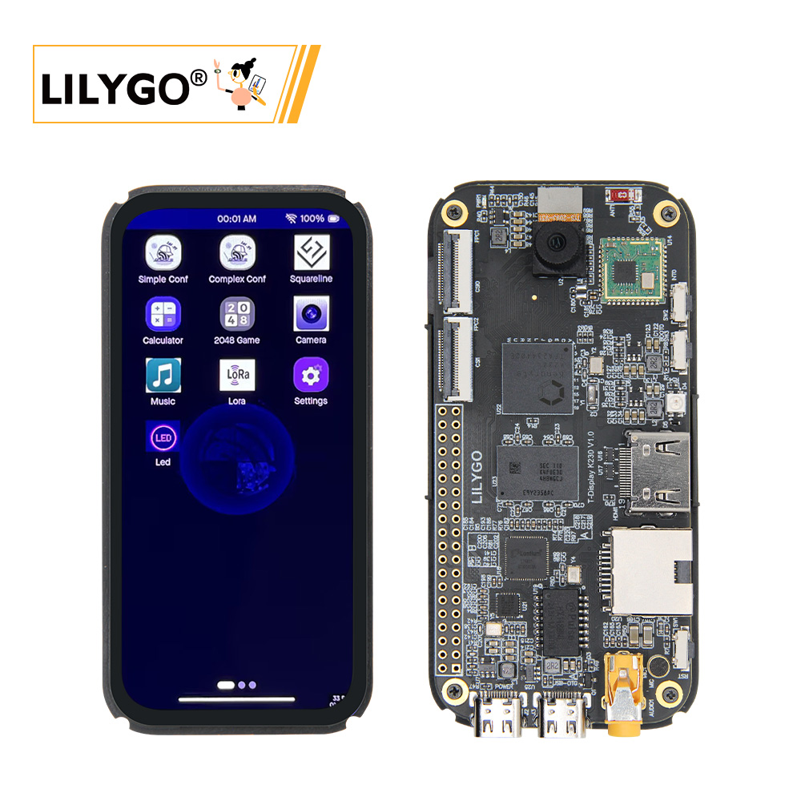
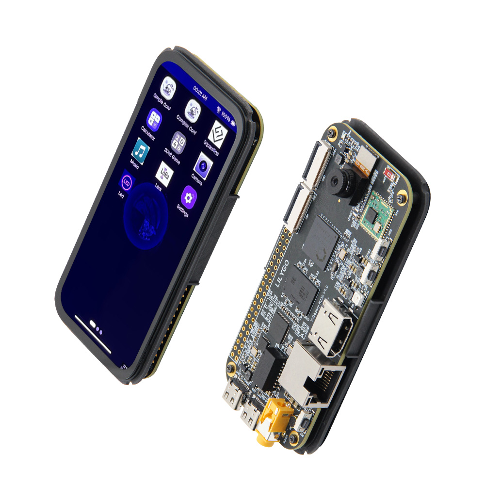

中文 简体
中文 简体LILYGO T-Display K230

版本迭代:
| Version | Update date | Update description |
|---|---|---|
| T-Display-K230_V1.0 | 2024-01-01 | 初始版本 |
购买链接
| Product | SOC | 内存 | 存储 | Link |
|---|---|---|---|---|
| T-Display K230 | K230 + ESP32-S3 | 8Gb LPDDR4 | 16MB FLASH + TF卡 | LILYGO Mall |
目录
描述
T-Display K230 是继 K210 之后，基于嘉楠科技最新芯片 K230 设计的一款全新产品。它继承了 K230 高达 1.6GHz 主频的强大算力，并融合了 LILYGO 特色的 LoRa 通讯功能和 Display，同时集成了 HDMI 接口和以太网接口，为开发者提供更广泛的应用可能。
在外观设计上，T-Display K230采用了符合手持设备尺寸的设计，配备4.1英寸优质AMOLED屏幕，支持电容触摸，提供更加流畅的视觉体验和交互体验。K230作为一款AIoT领域的高性能芯片，具备丰富的计算能力和扩展接口，双核RISC-V处理器主频高达1.6GHz，集成NPU算力接近1.6TOPS，支持AI推理加速。LoRa通讯+ISP摄像头的组合，让T-Display K230在远程、无线数据传输、AI识别、物联网监控交互等领域都具备强大优势。
预览
实物图

引脚图

模块
1. 主处理器 (K230)
- 芯片：嘉楠 K230
- CPU 大核：1.6GHz RISC-V，128bit RVV 1.0扩展
- CPU 小核：0.8GHz RISC-V
- NPU (KPU)：算力接近 1.6TOPS，支持 INT8/INT16
- 内存：8Gb LPDDR4
- 编解码：H.264/H.265 编解码，JPEG 编解码
2. 协处理器 (ESP32-S3)
- 芯片：ESP32-S3-R8
- PSRAM：8M
- FLASH：16M
- 功能：Wi-Fi/蓝牙连接，系统辅助管理
3. 屏幕
- 尺寸：4.1英寸AMOLED
- 分辨率：568×1232
- 接口：2 lane MIPI DSI
- 触摸：电容触摸屏 (GT9895)
4. 摄像头
- 接口：3路 MIPI CSI-2
- 配置：默认配置一路，最高支持1路4lane + 1路2lane
- 速率：最高1.5Gbps
5. 通信模块
- LoRa：SX1262，SX1280，支持433~923MHz频段
- Wi-Fi：802.11b/g/n (ESP32-S3)
- 以太网：IEEE 802.3u 兼容
- 蓝牙：Bluetooth 5 (LE) (ESP32-S3)
6. 音频
- 输出：3.5mm音频接口
- 输入：麦克风咪头
概述
| 组件 | 描述 |
|---|---|
| 主处理器 | K230 双核RISC-V (1.6GHz + 0.8GHz) |
| 协处理器 | ESP32-S3-R8 |
| NPU | 1.6TOPS，支持AI推理加速 |
| 内存 | 8Gb LPDDR4 |
| 存储 | 16MB FLASH + TF卡扩展 |
| 屏幕 | 4.1英寸 AMOLED (568×1232) |
| 摄像头 | 3路 MIPI CSI-2 |
| 视频输出 | HDMI 1080P@30FPS |
| LoRa | SX1262/SX1280 (433~923MHz) |
| 网络 | Wi-Fi + 以太网 |
| USB | 1 × POWER + 1 × USB 2.0 OTG (TYPE-C) |
| IO 接口 | 2×20 双排扩展接口 |
| 按键 | RST + BOOT + INT0 |
| 指示灯 | 电源指示灯 + RGB灯 |
| 电源 | 5V/500mA |
| 尺寸 | 104×51×15.5mm |
K230-SDK软件开发快速指南
K230 SDK结构简介
| 一级目录 | 二级目录 | 说明 |
|---|---|---|
| configs | NA | 资源配置 (内存分配规划) |
| output | NA | SDK编译产物 |
| src | big | 大核RTSmart代码 |
| src | common | 大小核公共代码 |
| src | little | 小核Linux代码 |
| tools | docker | dockerfile |
| tools | doxygen | doxygen脚本和配置文件 |
| tools | kconfig | |
| tools | gen_image.sh | 生成可烧写镜像的脚本 |
| tools | gen_image_cfg | 镜像分区配置文件 |
| tools | tuning-tool-client | PC端图像调试工具 |
K230 SDK 是面向K230 开发板的软件开发包，包含了基于Linux&RT-smart 双核异构系统开发需要用到的源代码，工具链和其他相关资源。
配置软件开发环境
K230 SDK需要在Linux环境下编译，推荐使用Ubuntu Liunx 20.04。
如需使用windows环境编译，建议使用WSL2 + Docker环境。
使用docker编译环境
获取docker编译镜像
推荐在docker环境中编译K230 SDK，可直接使用如下docker镜像：docker pull ghcr.io/kendryte/k230_sdk可使用如下命令确认docker镜像拉取成功：
docker images | grep k230_sdk说明： docker镜像中默认不包含toolchain，下载源码后，使用命令'make prepare_sourcecode'命令会自动下载toolchain至当前编译目录中。
如果不使用docker编译环境，而是希望使用原生Linux进行编译，可参考
tools/docker/Dockerfile，安装相应的工具至您的Linux系统中即可。如下载速度较慢或无法成功，可使用
tools/docker/Dockerfile自行编译docker image，详情请参考K230 SDK使用说明
编译K230 SDK
下载K230 SDK源码
git clone https://github.com/kendryte/k230_sdk
cd k230_sdk
make prepare_sourcecode
make prepare_sourcecode会自动下载Linux和RT-Smart toolchain, buildroot package, AI package等. 请确保该命令执行成功并没有Error产生，下载时间和速度以实际网速为准。
开始编译K230 SDK
以docker镜像编译为例：
- 确认当前目录为
k230_sdk源码根目录， - 使用如下命令进入docker
docker run -u root -it -v $(pwd):$(pwd) -v $(pwd)/toolchain:/opt/toolchain -w $(pwd) ghcr.io/kendryte/k230_sdk /bin/bash
根据不同开发板或软件功能，选择不同的配置config进行编译，编译命令格式：
make CONF=xxx，如：
- 编译K230-USIP-LP3-EVB板子镜像，执行
make CONF=k230_evb_defconfig命令开始编译- 编译CanMV-K230板子的镜像，执行
make CONF=k230_canmv_defconfig命令开始编译
- 外部目录中自动下载的toolchain会映射至docker镜像中的
/opt/toolchain/目录下。- 默认参数
-u root指定docker以root用户执行，k230_sdk无需root权限即可编译- docker镜像请使用
ghcr.io/kendryte/k230_sdk完整路径，如自行编译的本地docker镜像，请修改相应名称
编译产物简介
以make CONF=k230_evb_defconfig 编译生成的产物为例：
k230_evb_defconfig/images
├── big-core
├── env.env
├── jffs2.env
├── little-core
├── sysimage-sdcard.img # SD和emmc非安全启动镜像
├── sysimage-sdcard.img.gz # SD和emmc的非安全启动镜像压缩包
├── sysimage-spinor32m.img # norflash非安全启动镜像
├── sysimage-spinor32m.img.gz # norflash非安全启动镜像压缩包
└── sysimage-spinor32m_jffs2.img # norflash jffs2非安全启动镜像
TF卡和eMMC均可使用
sysimage-sdcard.img镜像,或使用sysimage-sdcard.img.gz解压缩得到该文件。
预编译镜像下载
如果不希望自行编译镜像，可下载预编译镜像，直接烧录使用
- main branch: Github默认分支，作为release分支，编译release镜像自动发布至Release页面.(从
v1.4版本开始支持) - 预编译release镜像：请访问嘉楠开发者社区, 然后在
K230/Images分类中，下载所需的镜像文件，evb设备下载k230_evb*.img.gz,canmv设备下载k230_canmv*.img.gz。
下载的镜像默认为
.gz压缩格式，需先解压缩，然后再烧录。
K230 micropython镜像所支持的功能与K230 SDK并不相同
烧录镜像文件
烧录TF卡
如使用Linux烧录TF卡,需要先确认TF卡在系统中的名称/dev/sdx, 并替换如下命令中的/dev/sdx
sudo dd if=sysimage-sdcard.img of=/dev/sdx bs=1M oflag=sync
如使用Windows烧录, 建议使用rufus工具
其它更详细的烧录方法，请参考K230 SDK文档
上电启动
K230 EVB开发板上电启动
K230 EVB支持SDCard、eMMC、norflash等多种启动方式，用户可以通过改变开板上启动拔码开关的设置，来切换不同启动模式。
为方便开发，建议您准备一张TF卡，并将拔码开关切换至SD卡启动模式，后续可考虑将镜像文件固化至emmc中。
- 请先确认启动开关SW1选择在SD卡启动模式下（详情可参考开机上电方式）
- 将烧录完成的TF卡插入开发板TF卡槽中
- 开发板接上电源
- 将电源开关K1拔到ON位置，系统可上电启动
- 如果您有接好串口，可在串口中看到启动日志输出。
CanMV-K230开发板上电启动
K230 CanMV-K230开发板支持SDCard启动方式、HDMI输出显示，因此，需要准备一张TF卡，此外建议准备一个HDMI显示器。
- 将烧录完成的TF卡插入开发板TF卡槽中
- 开发板上电，此时，系统可上电启动
系统上电后，默认会有两个串口设备，可分别用于访问小核Linux和大核RTSmart
小核Linux默认用户名root，密码为空。大核RTSmart系统中开机会自动启动一个应用程序，可按q键退出至命令提示符终端。
base platform:
ubuntu20.04
参考BUILD，可使用Dokcer或本地环境编译，编译速度更快或者参考K230 CanMV 自定义固件
- 烧录
linux下直接使用dd命令进行烧录，windows下使用烧录工具进行烧录，可参考K230 CanMV 如何烧录固件
Operator:
- 编译固件：
cd canmv_k230
time make log
canmv_k230/output/k230_canmv_v3p0 生成CanMV-K230-V3P0_rtsmart_localnncase_v2.9.0.img 可烧录至sd卡
编译 app:
change to current dir canmv_k230
cd canmv_k230/src/rtsmart/mpp
source build_env.sh
cd userapps/sample/sample_display
make
in the dir sample/elf generate sample_display.elf
default app: sample_display
将sample_display.elf 改名为app.elf 拷到sd卡 sdcard盘中重新上电，默认启动运行